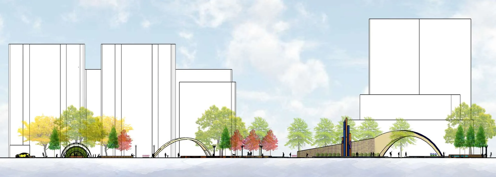
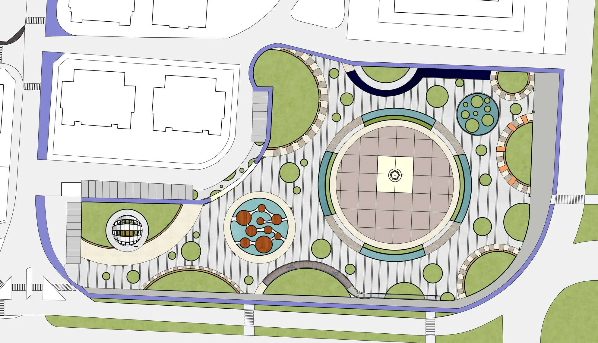

See what is already happening.
Terrain, users, movement, climate, vegetation and context create the first design brief.
I work by reading what is already there — terrain, movement, ecology, behavior and time — then turning those conditions into clear spatial decisions. The goal is not to place design on a site, but to make the site work differently because of it.


PLAN / SITE LOGIC EXPERIENCE / ATMOSPHERE
EXPERIENCE / ATMOSPHERE
The drawing reveals the atmosphere it is trying to create. Tap to hold the render open.
I use different tools, but the question stays the same: what change makes the site better?
Terrain, users, movement, climate, vegetation and context create the first design brief.
I look for one decision that can improve several relationships at once instead of adding isolated features.
Paths, planting, edges, materials, structures and atmosphere make the idea real and inhabitable.
Movement, gathering, planting and atmosphere organized as one public-space system.
Natural and cultural layers translated into strategy through spatial analysis and landscape planning.

Shared outdoor space designed as the social infrastructure of everyday residential life.

A place can look finished and still ignore the forces that shape how it works.
The visual result matters, but it should come from understanding movement, ecology, use and spatial consequence.
If you want to talk about landscape architecture, visualization, GIS or a possible collaboration, get in touch.